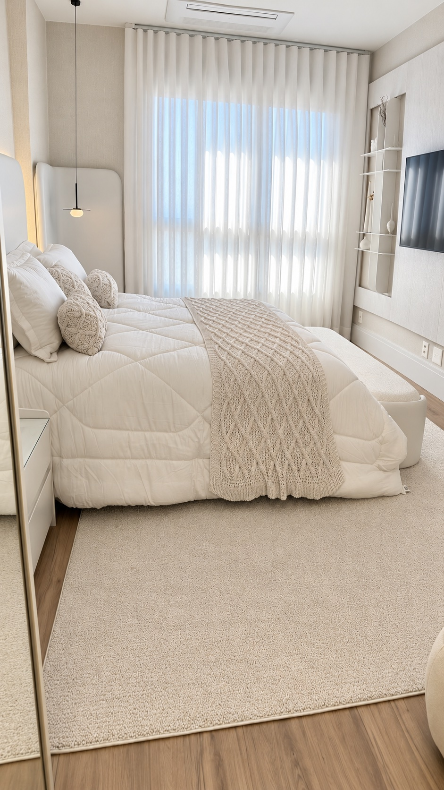
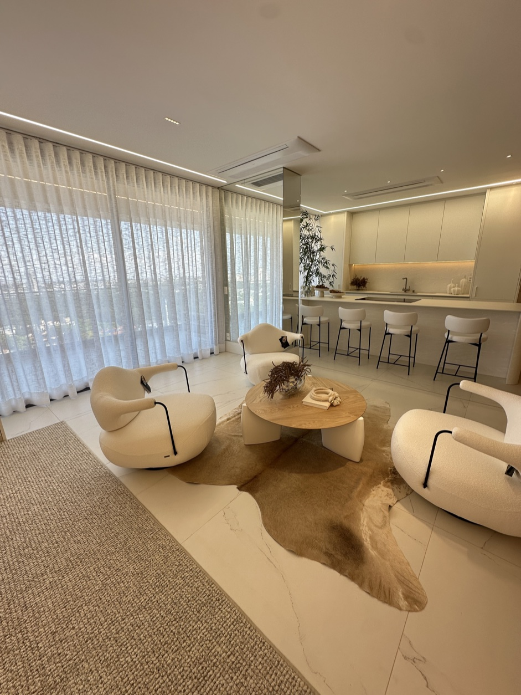
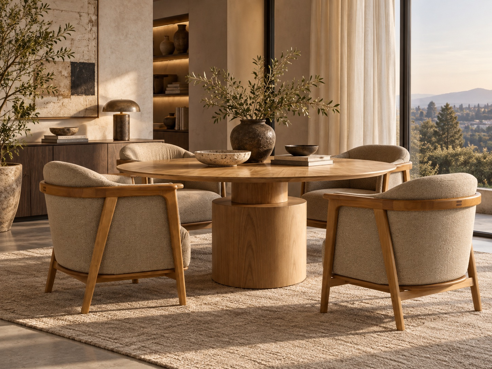
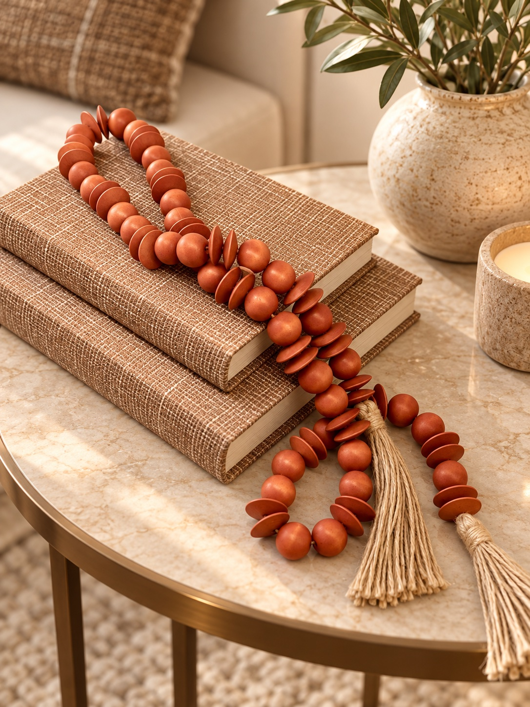

Curadoria para a casa
Canan Home Decor · Maringá
Uma casa que acolhe.
Uma decoração que tem a sua identidade.
A luz que entra pela janela, a textura do tapete, a poltrona que convida a sentar. São escolhas que fazem diferença na maneira como você vive a sua casa.
Na Canan Home Decor, você encontra cortinas e persianas sob medida, tapetes, papéis de parede, móveis, objetos e têxteis para compor ambientes com conforto, equilíbrio e personalidade.
01 / Nossa seleção
O que você procura
para a sua casa?
Você pode começar por uma janela, renovar o quarto ou escolher os detalhes que faltam na sala. Conheça as nossas linhas e encontre possibilidades para o seu momento.
Ver todas as linhas ↗
01 / 07Cortinas
Tecidos, acabamentos e opções de automação em soluções sob medida para cada ambiente. Uma escolha que participa da decoração e da forma como a luz chega à sua casa.
Conheça as cortinas 02 / 07
02 / 07Persianas
Modelos personalizados que combinam controle de luz, funcionalidade e estética. Disponíveis em versões manuais ou automatizadas.
Explore as persianas
03 / 07Tapetes
Texturas e formatos para aproximar os elementos do ambiente. Opções para áreas internas e externas, modelos orgânicos, sob medida e uma linha para espaços com pets.
Encontre seu tapete 04 / 07
04 / 07Papéis de parede
Estampas, texturas e painéis para mudar a presença de uma parede. Uma seleção com opções infantis e modelos personalizados.
Conheça os papéis de parede
05 / 07Móveis
Mesas, cadeiras, poltronas, aparadores, mesas laterais e bancos em uma curadoria que considera design, conforto e uso no dia a dia.
Explore os móveis
06 / 07Decoração
Quadros, vasos, esculturas, bandejas, caixas e objetos para completar a composição e trazer referências que fazem sentido para você.
Escolha os detalhes 07 / 07
07 / 07Cama, Banho e Estar
Colchas, lençóis, travesseiros, cobre-leitos, peseiras, toalhas, mantas e almofadas. Conforto e cuidado nos espaços que acompanham a sua rotina.
Conheça a linha têxtil02 / Nosso olhar
Antes de escolher uma peça, vale olhar para o ambiente.
Uma cortina precisa conversar com a luz e com as proporções da janela. Um tapete precisa fazer sentido entre o sofá, as poltronas e a circulação. Uma mesa precisa acomodar as pessoas e a rotina que acontece em volta dela.
Por isso, ao conversar com a Canan, conte como você usa o espaço, o que deseja mudar e o que já faz parte da decoração. Essas informações ajudam a direcionar a escolha entre as opções disponíveis.
Conte o que você está buscando ↗03 / Cada espaço é único
Sob medida para as necessidades do seu espaço.
Há ambientes em que as medidas, a entrada de luz ou a composição pedem uma solução específica. Nossas cortinas são desenvolvidas sob medida, as persianas contam com modelos personalizados e a linha de tapetes inclui opções sob medida e de personalização.
Converse com a equipe para entender quais possibilidades estão disponíveis para o produto que você procura.
Consulte as opções sob medida ↗04 / Inspiração
Veja como cores, texturas e proporções se encontram.
Uma seleção de ambientes para inspirar suas próximas escolhas. Observe como as cortinas suavizam a luz, como os tapetes aproximam os móveis e como pequenos objetos participam da composição.
Quero uma composição para o meu ambiente ↗05 / Canan Home Decor
Canan Home Decor, em Maringá.
Em Maringá, a Canan oferece soluções em cortinas, persianas e decoração para transformar seus ambientes, trazendo mais conforto, beleza e personalidade para cada espaço da sua casa. Encontre o que combina com você. Nossa seleção passa por cortinas, persianas, tapetes, papéis de parede, móveis, decoração e têxteis.
É possível olhar para uma necessidade específica ou conhecer as diferentes linhas para criar uma composição mais completa. Comece pelo que faz sentido para você.
Conheça a Canan ↗Fale com a Canan
Vamos começar pelo seu ambiente?
Envie uma foto, conte o que você procura e compartilhe as medidas que já tiver. Pode ser uma cortina para o quarto, um tapete para a sala ou os detalhes de uma nova composição.
A equipe vai ajudar você a conhecer as opções e entender o próximo passo.
Fale com a Canan